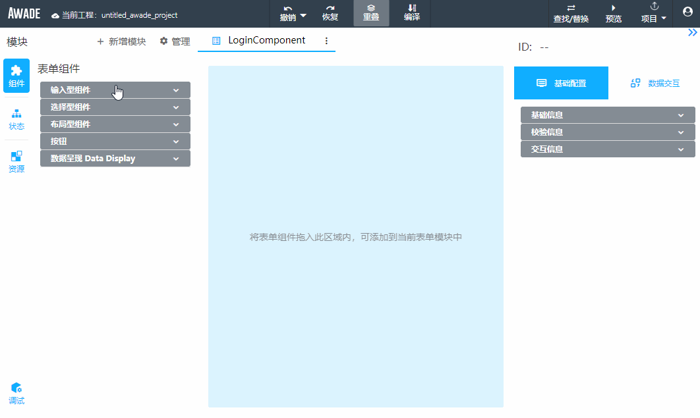
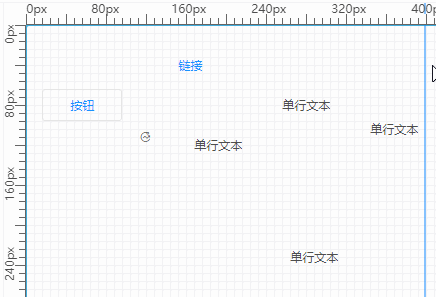
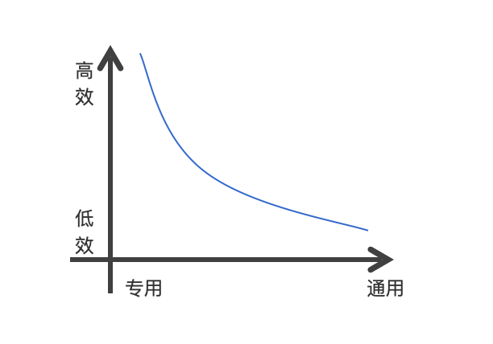
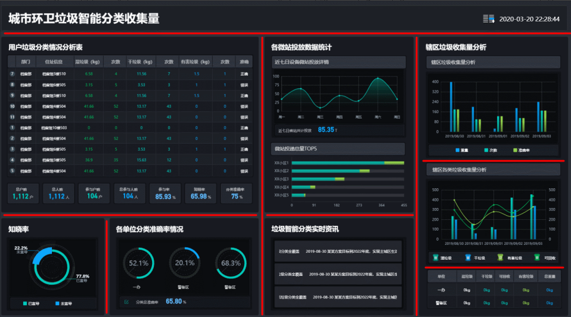
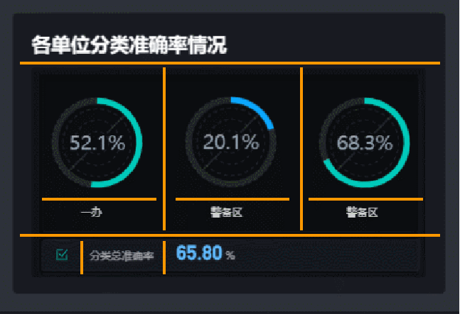
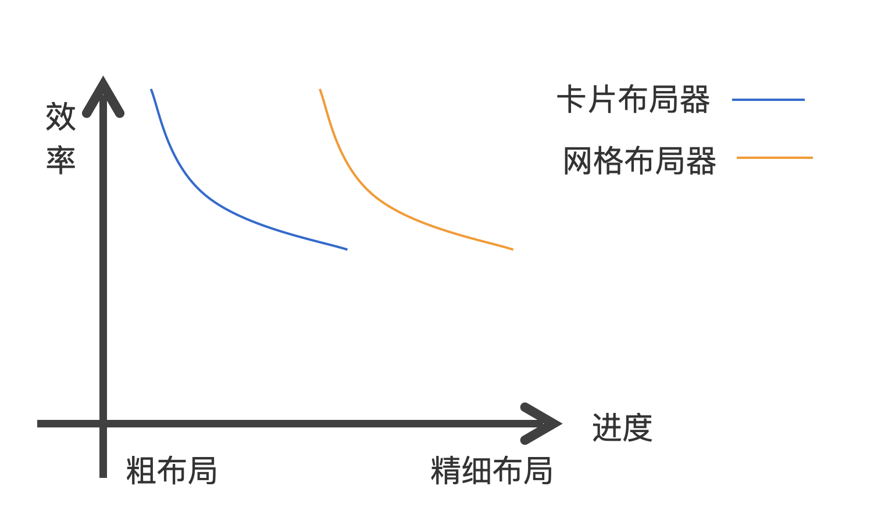
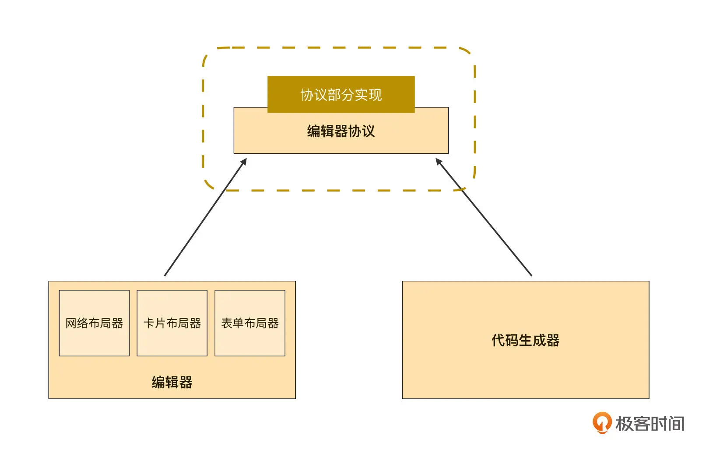

- 00 开篇词｜抛开争论，先来看看真正的低代码.md.html
- 01｜低代码平台到底是什么样的？.md.html
- 02｜低代码到底是银弹，还是行业毒瘤？.md.html
- 03｜低代码的天花板：一个完备的低代码平台应该具备哪些条件？.md.html
- 04｜演进策略：先发展通用能力还是先满足业务需求？.md.html
- 05｜基础设施 ：启动低代码平台研发之前，你需要有什么家底？.md.html
- 06｜踏出新手村便遭遇大Boss：如何架构低代码的引擎？.md.html
- 07｜结构化代码生成法：代码如何生成代码？.md.html
- 08｜布局编辑器：如何做到鱼和熊掌兼得？.md.html
- 09｜属性编辑器：如何解除Web组件属性与编辑器的耦合？.md.html
- 10 可视化编程：如何有效降低App前后端逻辑开发的技能门槛？.md.html
- 11｜亦敌亦友：Low Code与Pro Code混合使用怎样实现？.md.html
- 12 业务数据：再好的App，没有数据也是白搭.md.html
- 13｜多人协同编辑：野百合的春天为啥来得这么晚？.md.html
- 14｜编辑历史：是对Git做改造，还是另辟蹊径？.md.html
- 15｜低代码平台应该优先覆盖应用研发生命周期中的哪些功能？.md.html
- 16｜扩展与定制：如何实现插件系统并形成生态圈？.md.html
- 17｜兼容性问题：如何有效发现兼容性问题？.md.html
- 18｜兼容性问题：如何有效解决兼容性问题？.md.html
- 总结与展望｜低代码之路，我们才刚刚开始.md.html
- 捐赠
08｜布局编辑器：如何做到鱼和熊掌兼得？
从这一节课开始，我们正式学习 App 开发三部曲相关的内容，这三部曲分别是布局、交互和数据。这是 App 开发过程的三个主要步骤，也是业务团队开发 App 的三个主要工作内容。在时序上，这三个步骤并非顺序执行，而是交织进行的。但布局多数出现在 App 生命周期的早中期，交互和数据则集中在中晚期。
所以今天我就先来说说三部曲中的布局篇。顾名思义，布局就是按照 UX 设计稿或需求说明书里的草图，把需要的组件逐个放到界面上，并按照要求排列整齐，形成 App 雏形的过程。
Pro Code 开发模式下的布局过程是极抽象的过程，开发人员需要把形象化的 UX 设计稿转换为一行行抽象的指令，同时在脑海里想象这些指令的渲染效果。而在低代码模式下，布局过程是非常形象的过程。我们可以利用低代码编辑器的布局器，通过画布上的拖拉拽，可视化地完成这一过程。而且，由于新手初次尝试低代码开发所做的事儿就是布局，所以拖拉拽往往成了大家对低代码模式的第一印象。
显然，布局过程非常机械，低代码平台应该有能力自动化这个过程。所以，在专栏的最后一讲里，我会给你简单介绍实现一个 D2C（Design to Code）的思路，实现低代码平台的自动化布局。
先别急着去翻最后一讲！D2C 再牛再酷，也只是辅助手段，从设计稿里自动识别出来的 App 布局，也需要微调，如果后面业务需求更新了，还需要手工维护布局。因此 D2C 并不能替代今天这讲的内容，请耐心学习这一讲。
鱼和熊掌
首先，我们要明确，不同类型的业务场景下的布局器会有很大差别。
比如，表单场景总体上是以行为单位，自上而下布局。而且一行之中同时包含多个元素：标签、编辑器、附加说明、出错提示，等等。基于这样的特点，我们可以设计出类似下面这样的布局器：

这样的布局器针对表单场景来说，无疑是高效、易用的。但如果我们要用这个方式来布局一个 Dashboard 类 App，不仅毫无效率和易用可言，甚至连能否做到，都要打一个疑问号。因为，一个比较好的 Dashboard 场景布局器，应该是基于卡片的，要方便对大块的区域进行切分，从而快速获得尺寸合适的卡片，而且还要能方便地将小片区域融合成更大的卡片。
从前面举的两个例子可以看出，不同类型的业务场景的布局器确实会有很大差别。那么，有没有一种布局器能同时用于布局表单和 Dashboard 场景呢？
有！基于绝对坐标的布局器就能胜任。这种布局器很容易就能实现通过拖动来改变物体位置和尺寸的功能，比如下面这样的效果：

不过，这里要注意的是，布局器是基于绝对坐标实现的，但这并不意味着 App 在运行时无法获得具有弹性尺寸的页面。你可以先思考一下，我们后面就会给出解决思路。
好，现在问题来了。既然网格布局器（布局器背景有网格线辅助对齐，由此得名）可以同时实现表单和 Dashboard，那我们是否只实现网格布局器就好了呢？
当然不是。我们在关注功能的同时，还需要同时关注另一个维度：效率。我们可以很明显地看出来，基于行的布局方式开发表单的效率要远高于网格布局器，同理，基于卡片的布局方式来开发 Dashboard 的效率也远高于网格布局器。从这个角度看过去，网格布局器毫无优势。
好了，我们现在可以总结一下这部分了。效率和通用是两个相互制约的维度，无法同时获得，两者的关系可以定性地用下图来体现：

鱼和熊掌不可兼得
而且，效率和通用性不仅会在不同场景下相互制约，即使在同一个场景下，它们也会相互制约。我们拿 Dashboard 来举例，布局之初，页面有大片的空白区域，基于卡片的布局器可以快速地将空白区域切分为多个小卡片。
你可以看看下图，红线示意了卡片的切分过程，我们可以非常迅速地实现下面布局：

但如何在一个卡片内进行精细布局呢？如果继续采用切分的方式是否依然高效呢？
显然不是的。你看下上面这张图，随着布局越来越精细，一次操作可以影响到的界面面积越来越小。比如对一个卡片内部进行精细布局所需的操作次数，与对页面整体进行布局所需的次数可能还要更多。也就是说，对卡片内部的布局操作而言，相同布局操作的性价比就非常低了。
现在请你把目光聚焦在左下角那 3 个环形图上。对于这个区域，采用相同布局方式继续切分当然是可以做到的，但是效率并不高。下面这张图上，我把这个区域所需的布局操作用黄色线画出来了。你可以数一数，一共需要 9 次操作才能完成对这个小区域的布局，而在前面的图中，我们布局整个页面也才花了 8 次操作。

此时，如果我们换成网格布局或类似自由式布局方式，是否效率会更高一些呢？效率会更高，借助网格布局的快速对齐和空间自动分布工具，我们可以更快地完成这个布局。
因此，效率和通用性不仅在不同场景下有相互约束，在同一个场景的不同阶段，也有相互约束。那么面对二者选其一，我们是要效率，还是要通用性呢？
我都要
有道是：只有小孩子才做选择，成年人当然是全都要。如何做到效率和通用全都要呢？这就是我们这部分要解决的主要问题。
根据前面的分析，我们得到了这样的结论：靠单一的布局器是无法同时获得效率和通用能力的。所以，我们很容易想到可以采用组合的方式，兼顾高效率和通用能力。
现在，我们继续以前面那个垃圾分类页面为例讨论一下。我们已经知道，卡片布局器和网格布局器都具有很好的通用性。但在布局初始阶段，显然采用卡片的方式效率高，而在布局的后期，使用网格布局器进行精细化布局的效率更高。那么，我们将这两种布局方式组合使用，就可以得到一个既高效又通用的布局器了。下面这张图就描述了这样的过程：

现在，问题就简化成了如何实现多种布局器自由组合使用了。
为了更好地介绍具体的实现方法，我需要带你简要回顾一下【第 6 讲《踏出新手村便遭遇大 Boss：如何架构低代码的引擎？》】中的相关内容。在第 6 讲中，我将代码生成器与编辑器之间的关系分成了 4 个 Level，其中 Level 3 架构下，编辑器和代码生成器之间的关系变成了下面这样：

这个阶段，代码生成器与编辑器之间没有直接耦合。它俩各自与编译器协议产生耦合，布局器是编辑器的一部分。在这个架构下，只要各种布局器能严格遵守编译器协议来实现，那代码生成器就可以识别各个布局器的布局输出。
简单地说，无论布局器之间有多大差异，只要遵守同一套编译器协议，它们就可以玩到一块去，从而实现自由组合。此时的架构图可以细化成下面这个样子：

得益于编译器协议这层抽象，编辑器可以根据需要实现多种截然不同的布局器。并且，由于各个布局器都可以直接与代码生成器对接，所以从代码生成的角度来看，各个布局器之间已经是可以自由组合的了。这就好比是一片竹林，从地面上看有许许多多独立竹子，但他们的根是相同的。布局器就是地表一棵棵竹子，编译器协议就是它们的根。
相反地，如果你并未事先理清楚代码生成器与编辑器之间的关系，没有保持两者之间足够充分的松耦合关系，那此时此刻，你要做到任意布局器输出的数据都能和代码生成器无缝对接，就没那么容易了。
那这要怎么解决呢？一种原始做法是在代码生成器中采用 if-else 形式来处理不同布局器的差异。这当然是能走得通的，但问题是每多出一种布局器，判断的情况就会翻倍（指数增长），用不了三五种布局器，判断条件数量就将大到无法继续。相信我，这个过程将会相当痛苦。
现在，问题就进一步简化成了如何在编辑器的 UI 上实现各种布局器的相互嵌套使用的问题了。这样的问题，基本已经可以直接交给 UX 交互设计师和普通开发去处理了。实现方式也不止一种，这里我简要介绍一下我使用的方法，你可以参考一下。
我将布局器包装成了一种容器。容器也是一种组件，它具有组件的任何特性，但具备一个普通组件没有的能力：它能装得下其他组件或容器。容器支持相互嵌套的方式简直与布局器是天生一对。
最后，我们再以前面那个垃圾分类页面的布局过程为例，讨论一下多种布局器的配合使用过程。
首先上场的一般是卡片布局器，它可以快速地将页面横竖切分为多个卡片。在布局某个卡片内容时，开发人员可以根据卡片内容特征选择一种他认为更高效的方式来完成。他可以选择继续用卡片切分，也可以选择拖入一个网格布局器。
如果拖入了网格布局器，这个卡片的内容就变成了网格布局方式，可以发挥网格布局的优势实现高效精细化布局。同样地，如果该卡片的内容与表单更接近，他可以拖入一个表单容器，采用表单的方式进行布局。
可以看到，按页面特征挑选合适布局方式进行布局，可以发挥各种布局器的优势，又有效避免了它们的缺点，实现全程高效布局。鱼和熊掌你可以都要。
各种布局器
那现在，我们再来看看这几种常用的布局器特点、适用场景，以及关键实现思路。不过这里，我们先不深入介绍他们的实现细节，有机会我会再补充一下这方面的内容。
首先是网格布局器。
将网格布局器放第一个介绍，是因为它是我第一个做出来的布局器。第一个实现它是有原因的，因为它最主要特征就是通用。在不考虑效率的前提下，它可以在页面布局的各个阶段中用到，所以把它做出来之后，我们就可以一把搞定低代码编辑器的布局能力，非常划算。我推荐你也优先实现它。
在编辑态下，网格布局器采用绝对坐标来定位各个组件，所以非常容易实现鼠标点选、框选、拖动位置、拖动尺寸等基本编辑过程。当然，绝对坐标过于自由和精细，会导致很难实现画布上多组件的对齐，这点我们可以通过类似 PPT 那样的磁力线自动吸附来辅助解决。
虽然磁力线自动吸附很酷，但这不是最优解！主要有两方面原因：一是工作量，实际上这个功能还挺难实现的；但这不是关键，第二点才是关键否决票，UX 规范对组件间留白有严格规定，UX 小姑娘让你留 8px，你就不能留 7px 或者 9px。你想靠鼠标拖动来做到刚刚好 8px？别开玩笑了。为了解决这个问题，我们就需要开发出更加复杂的磁力线。
那最优解是啥呢？很简单，固定拖动步长。那么固定多少合适呢？我的选择是 8px。注意：一定要和 UX 团队取得一致意见，要求设计稿中，任何两个组件间的距离和尺寸必须是 8px 的整数倍。
其实，8px 不是协商来的，而是对已有设计稿分析后得出的，UX 团队也认为以 8px 作为基本单位约束所有 UI 是非常合适的。所以我们在画布上拖动组件位置和尺寸时，并不是丝滑的，而是以 8px 为单位一跳一跳的。这样做就省去了开发磁力线的麻烦，又可以很容易达成 UX 规范所需的留白要求，一举两得。
比如下图中的网格，就是 8×8px 的，网格布局器也由此得名：
那是不是网格布局器只能生成绝对坐标的页面呢？
显然不是的。这里就涉及一个复杂的分组算法。我们简要介绍一下，这个算法是根据平铺在画布上的各个组件的位置，对它们进行适当分组，同时对分出的各个组再进行相似的操作，直到无法再继续分组为止。这个时候我们就可以得到一颗有层级关系的树，之后我们再采用 Flex 布局就可以实现弹性了。如果要说清楚这个算法的实现，一讲内容可能都不够，所以我们只能留到以后再找机会补上了。
接下来是卡片布局器。
CSS 的盒子模型把二维 UI 做了极致的抽象。在 CSS 中，整个二维世界都是盒子组成的。无疑，这个抽象是成功的，但代价却是难用。
我在盒子模型的基础上做了一点点扩充，把盒子分成两种，一种是水平盒子，一种是垂直盒子：
左边是水平盒子，右边是垂直盒子
布局规则极简单：水平盒子会将它的直接子级按照水平排列，垂直盒子则将其直接子级垂直排列。关键点是，水平和垂直盒子支持任意层级的自由组合。这样做后，不可思议的事情就这样发生了，两个极简单的盒子通过自由组合，居然可以产生无限种可能，从而可以用它们来描述整个二维 UI。
这里我们还是以前面垃圾分类页面来举例。我们先看下面的动画：
我们来数一数这个界面包含了哪些盒子：
- 土色部分是一个垂直盒子，只有 1 个；
- 中间蓝色部分是水平盒子，有两个；
- 最里头红色部分是垂直盒子，有好多。
是不是很简单？
这个盒子布局的全部代码，都随着我们的低代码可视化组件集 Jigsaw一起开源在 GitHub 上了，如果你有兴趣的话，可以打开这里看看它的其他 demo。这里有两个 box 实现，一个是用于运行时的轻量化 box，一个是用于编辑时的 box，二者的实现差异非常大。
帮忙点个星星哟！
然后是表单布局器。
我在【第 5 讲《基础设施 ：启动低代码平台研发之前，你需要有什么家底？》】中将市面上的组件集的封装方式归为 3 类，分别是数据驱动型、模板驱动型、以及 CSS 样式模板。
如果要将表单封装成一个组件，那显然采用模板驱动方式封装会更合适。因为表单对 UI 定制的需求巨大，非常难以按照数据驱动的方式来封装。但在那一讲中我也说了，数据驱动型的组件更适合用在低代码平台上。
这个矛盾如何解决呢？难道我们硬着头皮按照数据驱动方式来封装表单吗？
不需要，开源社区里已经有优秀的解决方案了。我这里给你两个推荐方案。首先，我在用的是ngx-formly，这是一个非常强大的数据驱动型实现，能满足我 99% 的需要（扣 1 分是因为它在复杂异步校验方面并不完美）。如果你恰好采用的是 Angular 技术栈，那么可以选它。Jigsaw 对应 ngx-formly 表单控件封装，我们也开源了，你可以看看。
另一个推荐的数据驱动表单的实现是阿里的Formily，支持 React 和 Vue，也是非常优秀的一个作品。
有了数据驱动型的表单的帮助，低代码编辑器只要采用可视化的方式生成一个复杂的数据对象，然后将这个数据对象喂给表单组件，就可以渲染出表单视图了。甚至，Formily还提供了可视化生成数据对象的设计器，你也可以考虑直接将它集成到你的低代码平台上，节约更多工作。
最后是流程编排器
这种布局器是特定场景下专用的，通用性不高，但和表单相似，在适用的场合下，会大幅提升布局效率。我主要将它用于流程审批类 App 的布局，简单地说就是开发一些流程审批类的 App 时，直接用它当做顶层布局器，然后各个流程环节配合使用表单等其他布局器，可以实现非常高效率的 App 开发效果。
同时，我们还可以将它用于数据编排场景（这不是 App）。服务端给的数据不见得都是合适前端使用的，多数情况下都需要做一定的编排组合、结构转换后才能给前端组件使用，这个过程就需要用到数据编排了。数据编排过程和流程编排非常相似。我在第 11 讲《业务数据：巧妇难为无米之炊，再好的 App 没有数据也是白搭》中会对这个过程有专门介绍。
具体实现方面，同样地，我并未自行实现编排功能，而是集成了社区里的开源软件X6，你可以参考一下。
小结
今天我详细介绍了 App 开发三部曲中的布局篇。我们知道，不同类型的 App，布局方式迥异，即使相同的 App 在不同开发阶段也有不同的布局需求。我认为布局器最主要需要满足两方面的诉求，一是通用性，二是效率。通用性是我们在低代码编辑器研发早期主要关注的维度，随着低代码编辑器越发成熟，对效率的追求就逐渐超越了对通用性的追求。
得益于低代码编辑器早期充分发展了通用能力，因此在它成熟之后，我们就可以把效率作为唯一的追求，将效率发挥到极致。为了做到这一点，我们甚至需要关注不同布局方式在同一个 App 的不同开发阶段下的效率表现，通过组合的方式来发挥不同编辑器的最大效率，并规避各自的短板。从而得到鱼和熊掌兼得的效果。
这一讲中，我还给你介绍了网格、卡片、表单、编排等 4 种布局器的特征和实现要点，同时也介绍了相关的开源资源。多种布局方式需要相互组合才能发挥各自的最大效用，我建议你将各个布局器当作容器来实现。容器天然具有多层级相互嵌套的特性，这使得各个布局器可以自由组合使用，应用团队可以按需、按 App 特征挑选合适的布局器来实现快速布局。
思考题
在你的场景中，网格、卡片、表单、编排哪种布局器的需求是最大的？除了这 4 种布局器之外，你还需要哪些布局器？
欢迎在评论区留言。我们下一讲再见。
© 2019 - 2023 Liangliang Lee. Powered by gin and hexo-theme-book.